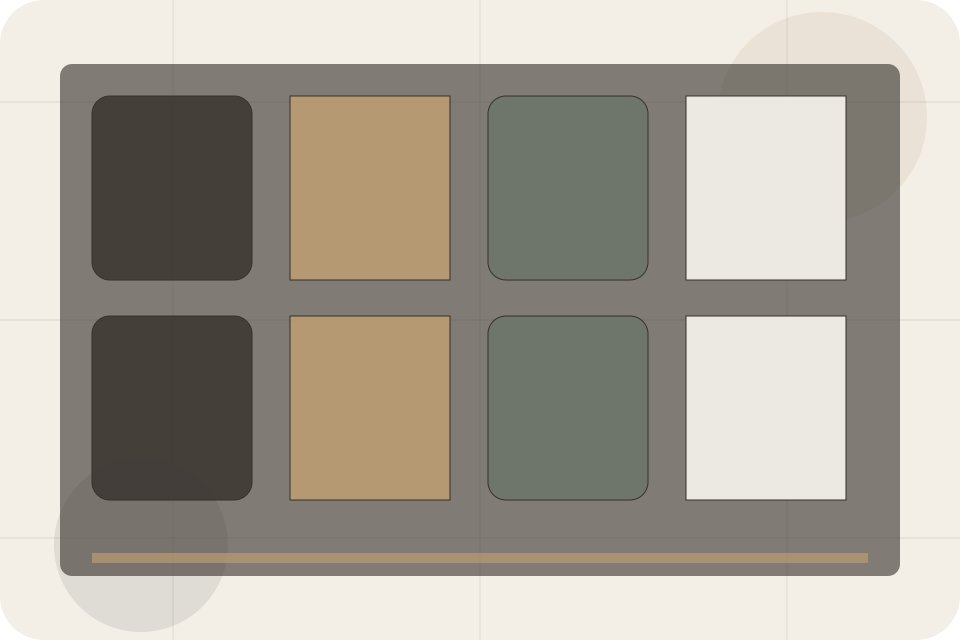
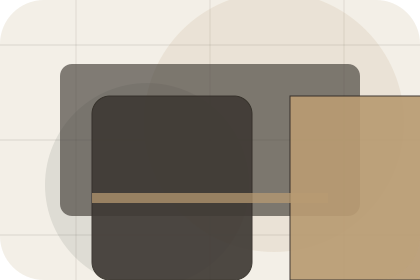
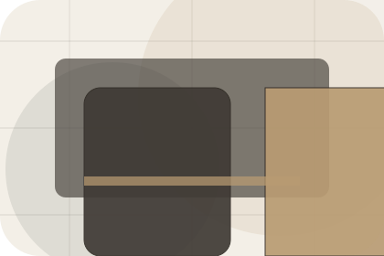
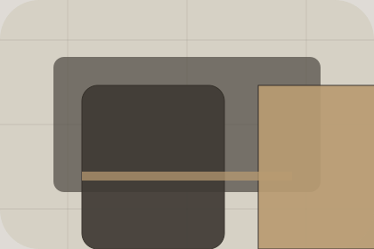

FAQ / 01
FAQ by Stay
FAQ shaped for hospitality, hotels & guest accommodation decisions.
FAQ opens as a clear hospitality decision hub: what Stay offers, who it helps, why it matters, and which route to take first.
The first screen combines positioning, proof, primary action, and fast internal navigation, so people can act immediately or compare the rest of the faq route with context.
Check availabilityPlan the visitReserve with context
Serene full-bleed stay hero
Check Availability
Select the closest route and Stay keeps the next step, proof, and follow-up expectation aligned with comfort and availability.

FAQ / 02
Questions before you check availability
Checkin handles buying doubts directly so visitors can understand timing, fit, limits, and the safest next step.
Answers are short by design: enough to remove hesitation, not so much that the page turns into documentation before the visitor can act.
Explore FAQ- 01
Question
Checkin gives the page a specific angle instead of repeating the navigation label.
- 02
Answer
The retreat room cards show what to compare, what to avoid, and what matters most for hospitality, hotels & guest accommodation visitors.
- 03
Next Step
The final cue points to a useful internal route so the section keeps the journey moving.
FAQ / 03
Questions before you check availability
Parking handles buying doubts directly so visitors can understand timing, fit, limits, and the safest next step.
Answers are short by design: enough to remove hesitation, not so much that the page turns into documentation before the visitor can act.
Explore FAQStay structures parking around question, answer, and a clear next route so visitors can compare the block quickly before they check availability.
Check AvailabilityFAQ / 04
Questions before you check availability
Pets handles buying doubts directly so visitors can understand timing, fit, limits, and the safest next step.
Answers are short by design: enough to remove hesitation, not so much that the page turns into documentation before the visitor can act.
Explore FAQ
Question
Pets gives the page a specific angle instead of repeating the navigation label.
FAQ / 05
Questions before you check availability
Cancellation handles buying doubts directly so visitors can understand timing, fit, limits, and the safest next step.
Answers are short by design: enough to remove hesitation, not so much that the page turns into documentation before the visitor can act.
Explore FAQQuestion
Cancellation gives the page a specific angle instead of repeating the navigation label.
Answer
The retreat room cards show what to compare, what to avoid, and what matters most for hospitality, hotels & guest accommodation visitors.
Next Step
The final cue points to a useful internal route so the section keeps the journey moving.
FAQ / 06
Questions before you check availability
Breakfast handles buying doubts directly so visitors can understand timing, fit, limits, and the safest next step.
Answers are short by design: enough to remove hesitation, not so much that the page turns into documentation before the visitor can act.
Explore FAQBreakfast gives the page a specific angle instead of repeating the navigation label.
The retreat room cards show what to compare, what to avoid, and what matters most for hospitality, hotels & guest accommodation visitors.
The final cue points to a useful internal route so the section keeps the journey moving.
FAQ / 07
Questions before you check availability
Access handles buying doubts directly so visitors can understand timing, fit, limits, and the safest next step.
Answers are short by design: enough to remove hesitation, not so much that the page turns into documentation before the visitor can act.
Explore FAQQuestion
Access gives the page a specific angle instead of repeating the navigation label.
Answer
The retreat room cards show what to compare, what to avoid, and what matters most for hospitality, hotels & guest accommodation visitors.
Next Step
The final cue points to a useful internal route so the section keeps the journey moving.
FAQ / 08
Questions before you check availability
Family handles buying doubts directly so visitors can understand timing, fit, limits, and the safest next step.
Answers are short by design: enough to remove hesitation, not so much that the page turns into documentation before the visitor can act.
Explore FAQQuestion
Family gives the page a specific angle instead of repeating the navigation label.
Answer
The retreat room cards show what to compare, what to avoid, and what matters most for hospitality, hotels & guest accommodation visitors.
Next Step
The final cue points to a useful internal route so the section keeps the journey moving.
FAQ / 09
Compare scope and terms
Payments makes commercial comparison easier by showing fit, scope, and terms before hospitality visitors ask for the next step.
The layout keeps price-sensitive decisions honest: it separates starting scope, fuller delivery, and ongoing support so the visitor can ask a sharper question.
Explore FAQ
Fit
Who the offer is for, which scope it suits, and when a different route may be better.
FAQ / 10
Check Availability
Stay closes the faq route with a clear action, a quick reminder of the value, and a low-friction way to check availability.
Visitors who are ready can use the primary action. Visitors who are still comparing can scan the section links, proof, and support routes before they check availability.
Check AvailabilityThe final block keeps the choice simple: act now, compare one more proof route, or send enough detail for a focused response.
Check Availabilitycomfort and availability
Check Availability
A hotel site with serene full-bleed rooms, understated booking modules, experience cards, and policy calm. FAQ ends with a direct path to check availability, plus enough context for visitors who still need to compare.

Check AvailabilityImportant notes before you act
Rates, availability, cancellation, and access policies depend on selected dates and booking terms.